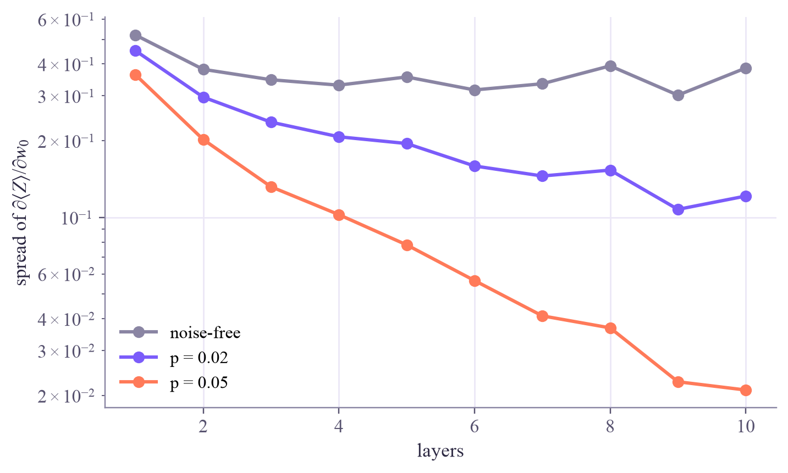

noise-free: test accuracy 0.975, average |⟨Z⟩| 0.510
Quantum Machine Learning
 about 15 min
about 15 min qml-w4d1.ipynb
qml-w4d1.ipynb
Noise in quantum machine learning
What does noise do to a trained quantum classifier? Gate noise shrinks its scores, relaxation shifts them, and in deep circuits noise drowns the gradients.
In this lesson you will
- Tell noise that shrinks ⟨Z⟩ from noise that shifts it, and predict what each does to the predictions
- Explain why shrunken scores need more shots, and undo a shift with a threshold learned on the noisy device
- See gradients fade exponentially with depth under noise: a noise-induced barren plateau
Warm-up
1 minFrom perfect simulators to real qubits

Everything in weeks 2 and 3 ran on a perfect simulator. Real qubits are noisy: gates misfire, and qubits relax from to while they wait to be measured (QC week 6). Today you put week 3's trained classifier on noisy qubits. Some of the noise turns out to be harmless, some can be fixed, and some sets hard limits on what quantum models can do today.
Big idea
4 minShrink, shift and fade
Shrink. Depolarizing noise mixes a little randomness into the qubits after every gate. A completely scrambled qubit has , so each error pulls the score toward 0: one depolarizing step maps , and noisy gates roughly multiply it by . The sign survives, so with exact expectation values the predictions barely change. But the margins shrink while Tuesday's shot noise, , doesn't: with few shots, more points flip.
Shift. Relaxation (amplitude damping) is different. decays to , never the other way, so it pulls toward . If it happens just before readout,
That moves the boundary, and points close to it change class. Unlike a shrink, a shift can be undone: a threshold learned on the noisy device, or the shift in week 3's , moves the boundary back. Training on the device you'll use is a simple form of error mitigation. Readout errors act the same way, with a shrink and a shift.
Fade. During training, gradients shrink just like scores: each noisy layer multiplies them by roughly for every gate in it. Deep noisy circuits therefore have exponentially small gradients, too small to estimate with any affordable number of shots. This is a noise-induced barren plateau, and unlike the barren plateaus of QC week 7 it appears even with two qubits.
Gate noise shrinks scores (harmless to their signs, harmful with few shots); relaxation and readout errors shift them (fixable by re-tuning on the device); and in deep circuits, noise makes the gradients fade exponentially.
Play
3 minNoise on a trained classifier
Week 3's XOR classifier, trained on a perfect simulator, now runs on simulated noisy qubits. The colors show the noisy score; dark rings mark wrong predictions.
Try this
Raise the gate noise to 0.1 with exact readout: the colors fade, but the boundary barely moves and the accuracy holds. Now read out with 21 shots and press Measure again a few times. Then set the gate noise back to 0 and raise the relaxation past 0.3: the boundary slides and the accuracy drops. Turn on re-tuning, and it's back.
Code
3 minNoise models in Qiskit Aer
The notebook for this lessonEvery code cell below, with what it printed, is in
qml-w4d1.ipynb. To change the code and run it yourself, open the notebook in Google Colab (free, in your browser) or download it for your own Jupyter.import numpy as np
from qiskit import QuantumCircuit
from qiskit.circuit import ParameterVector
from qiskit.quantum_info import SparsePauliOp
from qiskit_aer.primitives import EstimatorV2 as AerEstimator
from qiskit_aer.noise import NoiseModel, depolarizing_error, amplitude_damping_error
from sklearn.preprocessing import MinMaxScaler
from sklearn.model_selection import train_test_split
def classifier(layers=2, reupload=False):
x, w = ParameterVector("x", 2), ParameterVector("w", 4 * layers)
qc = QuantumCircuit(2)
for l in range(layers):
if reupload or l == 0:
qc.ry(x[0], 0)
qc.ry(x[1], 1)
qc.ry(w[4 * l], 0)
qc.rz(w[4 * l + 1], 0)
qc.ry(w[4 * l + 2], 1)
qc.rz(w[4 * l + 3], 1)
qc.cx(0, 1)
return qc
def estimator(noise_model=None):
"""Exact expectation values; with a noise model, from a density-matrix simulation."""
options = {"max_parallel_threads": 1}
if noise_model is not None:
options.update(method="density_matrix", noise_model=noise_model)
return AerEstimator(options={"backend_options": options})
def scores(est, circuit, X, weight_sets):
rows = np.array([np.concatenate([W, x]) for W in weight_sets for x in X])
return est.run([(circuit, SparsePauliOp("ZI"), rows)]).result()[0].data.evs.reshape(len(weight_sets), len(X))
rng = np.random.default_rng(0)
corner = rng.choice([-1, 1], size=(120, 2))
X, y = corner + 0.35 * rng.normal(size=(120, 2)), (corner[:, 0] * corner[:, 1] < 0).astype(int)
X_train, X_test, y_train, y_test = train_test_split(X, y, test_size=40, random_state=0, stratify=y)
scaler = MinMaxScaler((-np.pi / 2, np.pi / 2)).fit(X_train)
X_train, X_test = scaler.transform(X_train), scaler.transform(X_test)
def train(est, circuit, X, y, epochs=60, lr=0.3, seed=0):
"""Week 3's training: mean squared error of ⟨Z⟩ against ±1, parameter shift, gradient descent."""
t = 1 - 2 * y
W = 0.6 * np.random.default_rng(seed).normal(size=circuit.num_parameters - 2)
shifts = [s * np.eye(len(W))[j] for j in range(len(W)) for s in (np.pi / 2, -np.pi / 2)]
for epoch in range(epochs):
S = scores(est, circuit, X, [W] + [W + d for d in shifts])
W = W - lr * ((S[1::2] - S[2::2]) / 2) @ (2 * (S[0] - t)) / len(t)
return W
circuit, clean = classifier(), estimator()
W = train(clean, circuit, X_train, y_train) # trained on a perfect simulator
z_clean = scores(clean, circuit, X_test, [W])[0]
print(f"noise-free: test accuracy {np.mean((z_clean < 0) == y_test):.3f}, average |⟨Z⟩| {np.mean(np.abs(z_clean)):.3f}")What it printed in the notebook
def depolarizing(p):
model = NoiseModel()
model.add_all_qubit_quantum_error(depolarizing_error(p, 1), ["ry", "rz"])
model.add_all_qubit_quantum_error(depolarizing_error(p, 2), ["cx"])
return model
print(" p test accuracy average |⟨Z⟩| predictions changed by the noise")
for p in (0, 0.01, 0.02, 0.05, 0.1):
z = scores(estimator(depolarizing(p)), circuit, X_test, [W])[0]
print(f"{p:5.2f} {np.mean((z < 0) == y_test):.3f} {np.mean(np.abs(z)):.3f} {np.sum((z < 0) != (z_clean < 0))}")What it printed in the notebook
p test accuracy average |⟨Z⟩| predictions changed by the noise 0.00 0.975 0.510 0 0.01 0.975 0.452 0 0.02 0.975 0.400 0 0.05 0.975 0.276 0 0.10 0.975 0.144 0
z_noisy = scores(estimator(depolarizing(0.05)), circuit, X_test, [W])[0]
rng = np.random.default_rng(1)
for shots in (21, 101):
for name, z in (("noise-free", z_clean), ("p = 0.05 ", z_noisy)):
ones = rng.binomial(shots, (1 - z) / 2, size=(500, len(z)))
acc = np.mean((1 - 2 * ones / shots < 0) == y_test, axis=1)
print(f"{shots:3d} shots, {name}: accuracy {acc.mean():.3f} ± {acc.std():.3f}")What it printed in the notebook
21 shots, noise-free: accuracy 0.971 ± 0.025 21 shots, p = 0.05 : accuracy 0.888 ± 0.050 101 shots, noise-free: accuracy 0.988 ± 0.013 101 shots, p = 0.05 : accuracy 0.978 ± 0.020
waiting = circuit.copy()
waiting.id(1) # the moment before readout, where the decay happens
def damping(gamma):
model = NoiseModel()
model.add_quantum_error(amplitude_damping_error(gamma), ["id"], [1])
return model
print("gamma test accuracy average ⟨Z⟩")
for gamma in (0, 0.1, 0.2, 0.3, 0.4):
z = scores(estimator(damping(gamma)), waiting, X_test, [W])[0]
print(f"{gamma:5.1f} {np.mean((z < 0) == y_test):.3f} {np.mean(z):+.3f}")What it printed in the notebook
gamma test accuracy average ⟨Z⟩ 0.0 0.975 +0.044 0.1 0.975 +0.140 0.2 0.975 +0.235 0.3 0.800 +0.331 0.4 0.600 +0.427
import matplotlib.pyplot as plt
def gradient_spread(layers, p, samples=24, seed=0):
c = classifier(layers, reupload=True)
est = estimator(depolarizing(p)) if p else clean
rng = np.random.default_rng(seed)
point = np.array([[0.4, -0.3]])
grads = []
for _ in range(samples):
Wr = rng.uniform(0, 2 * np.pi, size=4 * layers)
up, down = Wr.copy(), Wr.copy()
up[0] += np.pi / 2
down[0] -= np.pi / 2
s = scores(est, c, point, [up, down])[:, 0]
grads.append((s[0] - s[1]) / 2)
return np.std(grads)
depths = range(1, 11)
fig, ax = plt.subplots(figsize=(6.4, 3.8), layout="constrained")
for p, color in ((0, "#8a85a3"), (0.02, "#7b5cfa"), (0.05, "#ff7a59")):
spreads = [gradient_spread(L, p) for L in depths]
ax.semilogy(list(depths), spreads, "o-", color=color, lw=2, label="noise-free" if p == 0 else f"p = {p}")
print(f"p = {p}: spread of the gradient at 1, 5 and 10 layers:", np.round([spreads[0], spreads[4], spreads[9]], 4))
ax.set_xlabel("layers")
ax.set_ylabel(r"spread of $\partial\langle Z\rangle / \partial w_0$")
ax.legend(frameon=False)
plt.show()What it printed in the notebook
p = 0: spread of the gradient at 1, 5 and 10 layers: [0.5199 0.3558 0.3857] p = 0.02: spread of the gradient at 1, 5 and 10 layers: [0.4513 0.1949 0.1212] p = 0.05: spread of the gradient at 1, 5 and 10 layers: [0.3631 0.078 0.021 ]

Cell 2: up to not a single prediction changes, but the average falls from 0.51 to 0.14. Cell 3: with 21 shots that costs 8 points of accuracy; with 101 shots, about 1. Cell 4: up to the boundary moves without crossing a test point, then the accuracy drops to 0.80 and 0.60. Cell 5: after 10 layers the gradient's spread is 0.39 noise-free, 0.12 at and 0.02 at . Straight lines on a log scale mean exponential decay.
Your turn
2 minYour turn: undo the shift
With , use the training points only to find the threshold with the best training accuracy, then check the test accuracy.
damped_train = scores(estimator(damping(0.3)), waiting, X_train, [W])[0]
damped_test = scores(estimator(damping(0.3)), waiting, X_test, [W])[0]
thresholds = np.linspace(-0.5, 0.9, 141)
# TODO: training accuracy for every threshold, pick the best, and compare test accuracy with t = 0 and with itNeed a hint?
For each t, compute np.mean((damped_train < t) == y_train). Several thresholds may tie for the best; take the middle of that range.
Show a solution
damped_train = scores(estimator(damping(0.3)), waiting, X_train, [W])[0]
damped_test = scores(estimator(damping(0.3)), waiting, X_test, [W])[0]
thresholds = np.linspace(-0.5, 0.9, 141)
train_acc = np.array([np.mean((damped_train < t) == y_train) for t in thresholds])
best = thresholds[np.flatnonzero(train_acc == train_acc.max())]
t_star = best.mean() # the middle of the best range
print(f"best thresholds on the training points: {best.min():.2f} to {best.max():.2f}; using t = {t_star:.2f}")
print(f"test accuracy with t = 0 : {np.mean((damped_test < 0) == y_test):.3f}")
print(f"test accuracy with t = {t_star:.2f}: {np.mean((damped_test < t_star) == y_test):.3f}")
print("Damping before readout maps ⟨Z⟩ to 0.7⟨Z⟩ + 0.3, so the boundary moved from 0 to 0.3. A threshold learned on")
print("the noisy device moves it back: this is what the trainable shift b in σ(−a⟨Z⟩ + b) does for free.")What it printed in the notebook
best thresholds on the training points: 0.29 to 0.32; using t = 0.31 test accuracy with t = 0 : 0.800 test accuracy with t = 0.31: 1.000 Damping before readout maps ⟨Z⟩ to 0.7⟨Z⟩ + 0.3, so the boundary moved from 0 to 0.3. A threshold learned on the noisy device moves it back: this is what the trainable shift b in σ(−a⟨Z⟩ + b) does for free.
The accuracy is back, at 1.000: one test point better than noise-free, by the luck of where the threshold landed. Notice what made the fix possible: you measured the noisy device's outputs on training data. A model trained on a perfect simulator and shipped to noisy hardware gets no such chance.
Check yourself
1 minQuick check
Question 1 of 3
Depolarizing noise multiplies every by 0.6. With exact expectation values, what happens to the predictions?
Question 2 of 3
Relaxation before readout maps to . If the threshold stays at 0, which points change class?
Question 3 of 3
Why do deep noisy circuits train badly, even on two qubits?
Wrap-up
1 minToday in one sentence
Research link
Wang and coauthors showed in 2021 that local noise makes gradients vanish exponentially with circuit depth, whatever the number of qubits. It's one reason today's QML experiments use shallow circuits, and why the error mitigation of QC week 6 matters for QML too. Noise also affects quantum kernels: it pulls kernel values toward a constant, much like week 2's concentration.
Go deeper (optional)
Wang, Fontana, Cerezo, Sharma, Sone, Cincio and Coles, "Noise-induced barren plateaus in variational quantum algorithms" (Nature Communications, 2021). Thanasilp, Wang, Nghiem, Coles and Cerezo, "Subtleties in the trainability of quantum machine learning models" (Quantum Machine Intelligence, 2023).
Tomorrow: trainability, simulability and classical baselines.

That's the lesson!
Tap the button to save it. Short and steady wins.
Marked by mistake? Undo